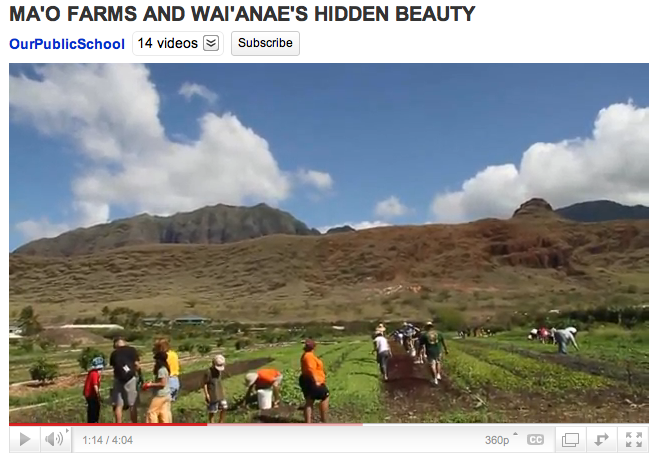
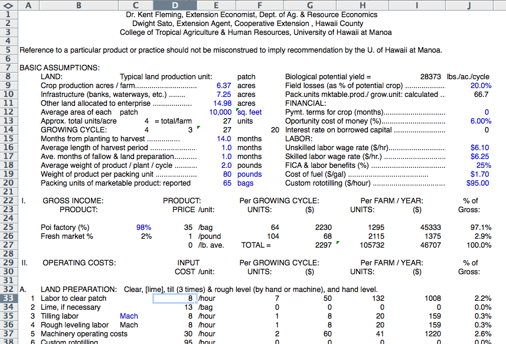

Content Area: Food, Economics, Setting Goals
Standard: Decision making and goal setting
- Objective: Cost analysis of growing food for your own family.
- Objective: Gardening: estimate how much input should produce how much food.
- Objective: Evaluate the immediate and long-term consequences of food and diet decisions on the individual, family, and community.
1. Visit your local market to check the prices of a 6 ounce bag of poi, the price of kalo corms and the price of a bag of lū‘au leaves. Watch for changes in price through the year.

Credit: Weston Yap. Poi at a market.
2. Brainstorm on a whiteboard the tools, supplies and planting materials needed to start a garden. Break down what can be donated or borrowed, and what must be purchased. Consider what is the cost of a shovel, a hose, fertilizer, rake, watering can and gloves.
Research a shopping list at these websites for Lowe's Home Improvement, or The Home Depot.
3. Learn about the connections between growing food and future opportunities. View this video, Ma‘o Farms and Wai‘anae's Hidden Beauty, min. 4:04. By OurPublicSchool.org. Link to Youtube.com. It features Ma‘o Farms, a community-based, nonprofit organization that addresses: keeping youth in school, sustainable economic development, agriculture, health, and Hawaiian culture.

Credit: image from Ma‘o Farms and Wai‘anae's Hidden Beauty posted on Youtube.
3. Farming requires ownership or lease of land. See the prices of land for sale on all the Islands at Hawai‘i Farms for Sale on Loopnet.com. Link to Loopnet.com. Estimate the price per acre for agricultural property for sale in different parts of Hawai‘i.
4. View this video, Evaluating Land and Facilities for Farming. min. 5:06. By Cornellsmallfarms. Link to Youtube.com. Part of a series by Cornell University Cooperative Extension Services. List the qualities these farmers looked for before purchasing good farmland and equipment.
5. Farming requires math:
A) Study this water flow problem from Taro–Mauka to Makai, UH – CTAHR, page 79.
How many gallons of water per day flow into a lo‘i (flooded taro farm)? Take an empty 5-gallon bucket, place it at the end of a water inflow pipe, and time how long it takes to fill. If it takes 6 seconds, then you have a rate of 50 gallons per minute. Calculation:
60 seconds / 6 seconds = 10 buckets per minute
10 buckets x 5 gallons = 50 gallons per minute (gpm)
Multiplying the 50 gpm by 1440 (minutes in a day, 60 min x 24 hrs) equals a flow of 72,000 gallons per day into this lo’i.
B) Study this problem for fertilizer needed in a kalo garden from Calvin Hoe, a kalo farmer and educator. 40 pounds of fertilizer is needed to cover for 1,000 square feet (SF). But we only have half a bucket of fertilizer. A bucket holds 20 pounds. So how many square feet can be covered?
1 bucket = 20 lbs. ½ bucket = 10 lbs.
40 lbs. of fertilizer covers 1,000 SF
10 lbs. / 40 lbs. = 25%. 25% x 1,000 SF = 250 square feet can be covered.
6. If you are still hungry to learn more about real world applications of math in farming, UH – CTAHR created an excellent Cost-of-Production for lo‘i. Link to CTAHR.hawaii.edu. Click the words to the left to download the Microsoft Excel spreadsheet. Size 33.5 KB. It can also be modified for dry land kalo or lū‘au leaf farming. The program itemizes the many cost factors of taro production, using average cost data in year 1994. Credit: Dr. Kent Fleming, Extension Economist and Dwight Sato, Extension Agent, UH – CTAHR.

Credit: Dr. Kent Fleming and Dwight Sato
7. If you have made friends with a farmer, for any food crop, ask if he or she would be willing to discuss the costs and rewards of farming.